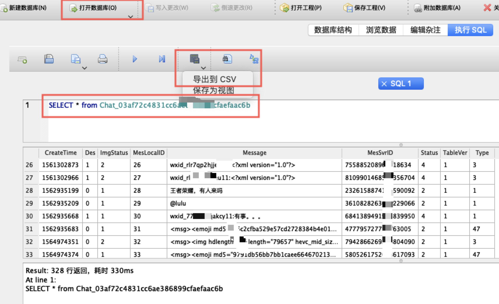

目的
众所周知，源于微信的安全性和ios的封闭性，想要把微信聊天记录导出为可编辑的文本内容不是一件容易的事。itunes和微信自带的备份，可以将聊天内容恢复到同一个微信号登录的手机上，却无法将这些内容提取为可随便编辑的文本内容。在查阅了网上大量靠谱不靠谱的方法后，作者总结了一个可行的流程，根据这个流程，可以实现：将微信聊天的文本内容导出为txt文本文件，之后的用途，嘿嘿，你可以生成和某人聊天的文字云，也可以对文本内容的词频进行分析，等等等等~~~
注意
本文所有步骤，全部基于mac+ios+itunes实现，android由于文件系统的开放性，可以有各种获取微信聊天内容的方法，作者在查阅资料的时候，也见过类似的博文，详见底部参考文章。工具：
- Mac: mac os 10.14.6
- itunes
- IMazing: 2.10.4 破解版，这里不放链接了=。=
- DB Browser for SQLite
- wxbackup
正文
整体的思路：1、使用itunes备份手机。2、使用Imazing提取微信文件夹。3、使用DB Browser for SQLite读取特定账号的微信聊天记录数据表，导出。上述流程最麻烦的就是提取微信的文件夹，作者下载试用的包括但不限于：微信管理大师（x），楼月微信聊天记录导出恢复助手（x），weback（x），果备份（x）…… 这些有些是收费的，价格不菲，然而并没有卵用，有些是跟不上时代，很久远不更新的了，所以能找到一款可以提取的软件真的不容易=。=。另外，github上相关开源项目，没有一个可用的，特别是这个WeChatExporter在查阅资料过程中出镜率很高，但实测无效。不过可以顺便了解一下nwjs哈哈哈。
itunes备份
打开itunes，连接手机备份。这一步没啥说的。只有一点可以了解下，mac itunes备份的默认路径为：/Users/${whtis}/Library/Application Support/MobileSync
导出微信文件夹
- 微信位于文件系统–>app–>AppDomain-com.tencent.xin–>Documents
图中红框部分，每个人不同。因为我手机前后登过3个微信号，所以有三个文件夹。那么问题来了，如何确定哪个文件夹是我们想要导出微信记录的微信号的内容呢？文件夹的命名很关键，网上很多人也提到，文件夹的命名是
md5(微信号)生成的，32位小写加密，这里要注意的是，md5加密的微信号，不是个人自定义的，而是腾讯原始的，以wxid_xxxxxx打头的这一串字符。如果你自定义了微信号，那么可以看一下wxbackup这个软件的使用。本文后面也会提到。进入到特定微信号的文件中，找到DB文件夹，可以看到
MM.sqlite这个文件，我们微信聊天的文本文件，就存在这个里面。下载DB Browser for SQLite，将
MM.sqlite打开，执行sql:SELECT * from Chat_03af72c4831cc6ae3XXXXX，可以看到如下图结果，Chat后跟的这串字符，即md5(想导出人wxid)。
其中，createTime是该条记录的时间戳，des中，0表示自己，Message就是微信聊天记录了。如示例图所示，导出csv，至此，主流程结束。
文本处理
这里多啰嗦几句，导出的文本中包含到红包链接、语音链接、撤回消息提醒、表情发送失败提醒等。为了获得纯净的文本，需要将这部分内容去除。最好的方式就是正则替换了。这里提供我处理文本时用的一些正则表达式：
|
|
其它
我们最终的目的是要获得一个可阅读的文档，因此还有一些后置工作要做，这里也放几个链接，都是处理过程中用的到的：
参考资料
wxbackup 微信聊天记录备份软件
好东西，不解释。全网唯一能用的软件，而且免费，链接：https://zhuanlan.zhihu.com/p/32511173。文中提到的，查看微信原始id的，可以直接在导出记录界面看到相应人的wxid。唯一美中不足的是，当导出的聊天记录过多时，浏览器会卡死，期待作者优化2333。
微信聊天记录分析，Python 之 WorldCloud)
本文主要参考之一，强烈建议阅读。
后记
在博客长草了一年多以后，能静下心来再写博客不容易，以后更要多进行总结，一边记录，一边成长吧。做人嘛，开心就好。